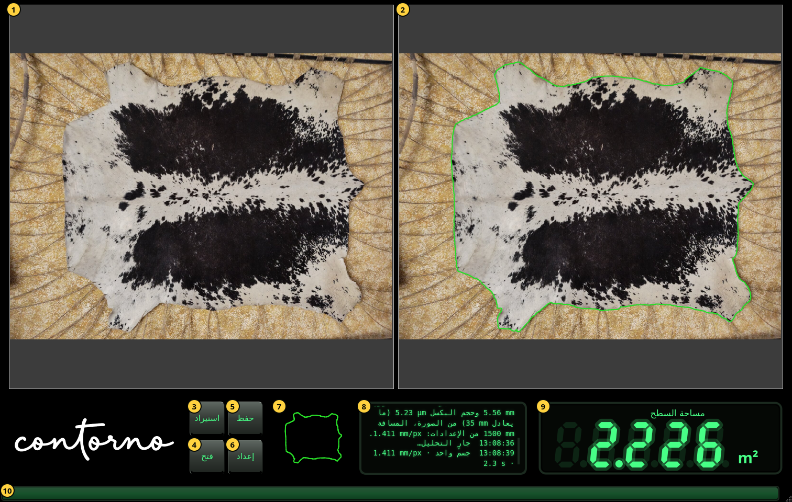
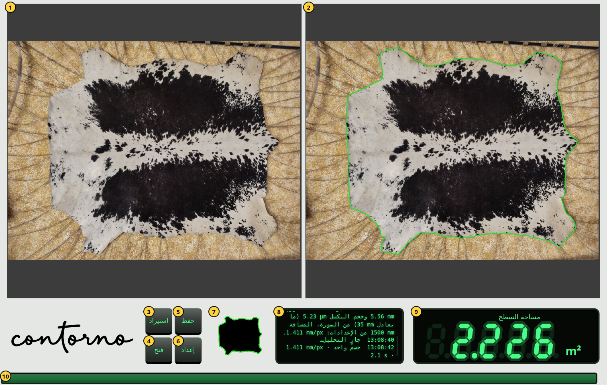

البدء
النافذة وأجزاؤها والتكبير والسمة الفاتحة.
افتح Contorno Indicator. تملأ النافذة الشاشة. قبل الصورة الأولى تعرض الشاشة شرطات وتقول لوحة الرسائل استورد صورة للأجسام الموضوعة على الطاولة.


- الصورة كما التُقطت، دون أي تغيير.
- الصورة نفسها مع الحدّ الذي وُجد، بالأخضر. داخل هذا الحدّ تُقاس المساحة.
- استيراد — اختيار صورة للجسم على الطاولة. يبدأ تحليلها فورًا.
- فتح — عرض فحص محفوظ من جديد. انظر حفظ الفحوص وفتحها.
- حفظ — الاحتفاظ بالصورة والكاميرا والحدّ والمساحة في ملف zip واحد.
- إعداد — الكاميرا واللغة والسمة. انظر الإعداد.
- القناع: الجسم كما يراه التحليل، بالأسود، وحدّه بالأخضر.
- لوحة الرسائل. يبدأ كل سطر بوقته. تقول ما الذي استُورد، ومن أين جاء المقياس، وكم جسمًا وُجد، وكم استغرق ذلك.
- شاشة العرض: المساحة داخل الحدّ.
- شريط الانشغال. يتحرك أثناء تحليل الصورة، ويبقى ممتلئًا ثانية واحدة عند وصول النتيجة.
التكبير والتمرير
أدِر عجلة الفأرة فوق صورة لتكبيرها أو تصغيرها عند المؤشر. اسحب للتمرير. تُكبَّر الصورتان وتُمرَّران معًا، فيبقى الحدّ في اليمين دائمًا فوق الموضع نفسه من الصورة في اليسار. تُعرض الصورة الجديدة كاملة من جديد.
شاشة العرض
تعرض الشاشة المساحة بـ cm² تحت 0.1 m² (برقم عشري واحد، مثل 125.4 cm²) وبـ m² ابتداءً من 0.1 m² (بثلاثة أرقام عشرية، مثل 2.226 m²). عند وصول قيمة جديدة تعدّ الأرقام إليها من القيمة السابقة. تُكتب الأعداد بأرقام لاتينية وبنقطة عشرية، كما في البرنامج.
- شرطات: لا صورة بعد، أو فشل التحليل. تقول لوحة الرسائل السبب.
- أرقام خافتة: قيمة الصورة السابقة أثناء تحليل الجديدة. الرقم الخافت ليس النتيجة الحالية أبدًا.
- أرقام ساطعة: المساحة داخل الحدّ المعروض في اليمين.
السمة الفاتحة
النافذة سوداء افتراضيًا. مفتاح السمة في الإعداد يجعل اللوحات رمادية فاتحة مع شعار أسود؛ ولا تتغير الصور.

